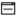

Hi, I'm Klerisson.
I’m a PhD student in Computer Science at Federal University of Uberlândia (UFU) - Brazil, mostly studying Software Engineering, advised by Marcelo Maia. I earned my B.S. in Information Systems, specializing in Information Retrieval, from State University of Montes Claros, Brazil.
After receiving my Master degree in Computer Science from UFU, I spent a period in industry working as software engineer at Scopus, Everis and eWave. With one year as mobile application developer at IndiaNIC in India.
Then, in August 2014 I started my PhD. In 2015-2016 I was visiting RMoD and SequeL laboratories at the National French Research Institute in Computer Science and Automation (INRIA Lille), working with Damien Cassou and Nicolas Anquetil on Software Engineering, and with Philippe Preux on applied Machine Learning.
My research aims to enable better decision making for individuals (software developers, movie watchers, robots, ...). I'm particularly interested on how data analytics could benefit citizens, industry and society.
To put it simply, I'm a promiscuous cross-disciplinary aspirant researcher!
News
(Good news only, although most of what I try fails).
- Paper accepted! "Bootstrapping Cookbooks for APIs from Crowd Knowledge on Stack Overflow" has been accepted at the Information and Software Technology.
- Paper accepted! "Recommending Comprehensive Solutions for Programming Tasks by Mining Crowd Knowledge" has been accepted at ICPC 2019.
- My SIGSOFT CAPS/NSF application for ICSE 2017 has been accepted.
- iSAPS is funding my travel to the International Software Architecture PhD School. Many thanks!
- "A Multi-Armed Bandit Model Selection for Cold-Start User Recommendation" accepted at UMAP2017 - 25th ACM International Conference on User Modeling, Adaptation, and Personalization.
- Accepted as an ACM Reviewer for Computing Reviews.
- Selected as a Student Volunteer for the premier conference on software engineering ICSE-2017 - International Conference on Software Engineering.
Publications
Important note: The copyrights for the following papers belong to the publishers. Papers may be downloaded for personal or research purposes only.
-
 Lucas B. L. Souza, Eduardo C. Campos, Fernanda Madeiral, Klerisson Paixao, Adriano M. Rocha, and Marcelo de Almeida Maia.
Bootstrapping Cookbooks for APIs from Crowd Knowledge on Stack Overflow. In Information and Software Technology, IST, 2019.
Lucas B. L. Souza, Eduardo C. Campos, Fernanda Madeiral, Klerisson Paixao, Adriano M. Rocha, and Marcelo de Almeida Maia.
Bootstrapping Cookbooks for APIs from Crowd Knowledge on Stack Overflow. In Information and Software Technology, IST, 2019.
-
Rodrigo Silva, Chanchal Roy, Masud Rahman, Kevin Schneider, Klérisson Paixão, and Marcelo de A. Maia.
Recommending Comprehensive Solutions for Programming Tasks by Mining Crowd Knowledge. In the International Conference on Program Comprehension, ICPC, 2019.
-
 Klérisson Paixão, Marcelo de A. Maia, and Marco Túlio Valente.
Uma Análise da Produção Científica Brasileira em Conferências de Manutenção e Evolução de Software. In VI Workshop on Software Visualization, Evolution and Maintenance, VEM, 2018.
Klérisson Paixão, Marcelo de A. Maia, and Marco Túlio Valente.
Uma Análise da Produção Científica Brasileira em Conferências de Manutenção e Evolução de Software. In VI Workshop on Software Visualization, Evolution and Maintenance, VEM, 2018.
-

Marco Túlio Valente and Klérisson Paixão.
CSIndexbr: Exploring the Brazilian Scientific Production in Computer Science. arXiv preprint, 2018.
-
Rodrigo Silva, Klérisson Paixão, and Marcelo de A. Maia.
Duplicate Question Detection in Stack Overflow: A Reproducibility Study. In 25th IEEE International Conference on Software Analysis, Evolution and Reengineering, SANER, 2018.
-
Klérisson V. R. Paixão, Crícia Z. Felício, Fernanda M. Delfim, and Marcelo de Almeida Maia.
On the Interplay between Non-Functional Requirements and Builds on Continuous Integration. In ACM/IEEE 14th International Conference on Mining Software Repositories, MSR, 2017.
-
Gustavo Santos, Klérisson V. R. Paixão, Nicolas Anquetil, Anne Etien, Marcelo de Almeida Maia, and Stéphane Ducasse.
Recommending Source Code Locations for System Specific Transformations. IEEE 24th International Conference on Software Analysis, Evolution and Reengineering, SANER, 2017.
-
 Crícia Z. Felício, Klérisson V. R. Paixão, Celia A. Z. Barcelos and Philippe Preux.
A Multi-Armed Bandit Model Selection for Cold-Start User Recommendation. ACM 25th Conference on User Modeling, Adaptation and Personalization, UMAP, 2017 .
Crícia Z. Felício, Klérisson V. R. Paixão, Celia A. Z. Barcelos and Philippe Preux.
A Multi-Armed Bandit Model Selection for Cold-Start User Recommendation. ACM 25th Conference on User Modeling, Adaptation and Personalization, UMAP, 2017 .
-
Crícia Z. Felício, Klérisson V. R. Paixão, Guilherme Alves, Sandra de Amo and Philippe Preux.
Exploiting Social Information in Pairwise Preference Recommender System. In Journal of Information and Data Management (JIDM), pages 99-115, 2016.
-
Fernanda M. Delfim, Klérisson V. R. Paixão, Damien Cassou and Marcelo de A. Maia.
Redocumenting APIs with crowd knowledge: a coverage analysis based on question types. In Journal of the Brazilian Computer Society, pages 1-34, 2016.
-
Crícia Z. Felício, Klérisson V. R. Paixão, Celia A. Z. Barcelos and Philippe Preux.
Preference-like Score to Cope with Cold-Start User in Recommender Systems. IEEE 28th International Conference on Tools with Artificial Intelligence, ICTAI, 2016.
-
Crícia Z. Felício, Claudianne M. M. de Almeida, Guilherme Alves, Fabíola S. F. Pereira, Klérisson V. R. Paixão, Sandra de Amo and Celia A. Z. Barcelos.
VP-Rec: A Hybrid Image Recommender Using Visual Perception Network. IEEE 28th International Conference on Tools with Artificial Intelligence, ICTAI, 2016.
-
Crícia Z. Felício, Klérisson V. R. Paixão, Celia A. Z. Barcelos and Philippe Preux.
Multi-Armed Bandits to Recommend for Cold-Start User. In Symposium on Knowledge Discovery, Mining and Learning (KDMiLe), Recife - Brazil, 2016.
-
Crícia Z. Felício, Claudianne M. M. de Almeida, Guilherme Alves, Fabíola S. F. Pereira, Klérisson V. R. Paixão and Sandra de Amo.
Visual Perception Similarities to Improve the Quality of User Cold Start Recommendations. Advances in AI: 29th Canadian Conference on Artificial Intelligence, Canadian AI, Victoria, BC, Canada, May. Cham: Springer. pp. 96–101, 2016.
-
Crícia Z. Felício, Klérisson V. R. Paixão, Guilherme Alves and Sandra de Amo.
Social PrefRec framework: leveraging recommender systems based on social information. In Symposium on Knowledge Discovery, Mining and Learning (KDMILE), pages 66-73, 2015.
-
Fernanda M. Delfim, Klérisson V. R. Paixão, and Marcelo de A. Maia.
Redocumentando APIs com conhecimento da multidão: um estudo de cobertura da API Swing no Stack Overflow. In III Workshop de Visualização, Evolução e Manutenção de Software (VEM), pages 1-8, 2015. (Honorable Mention)
-
Silva, L.L.; Paixão, K.R.; de Amo, S.; de Almeida Maia, M., On the Use of Execution Trace Alignment for Driving Perfective Changes. In 15th European Conference on Software Maintenance and Reengineering (CSMR), pp.221-230, 2011.
-
Silva, L.L.; Paixão, K.R.; de Amo, S.; de Almeida Maia, M. Software Evolution Aided by Execution Trace Alignment. In Brazilian Symposium on Software Engineering (SBES), pp.158-167, 2010
-
Marcelo de A. Maia, Victor Sobreira, Klérisson R. Paixão, Sandra A. de Amo and Ilmério R. Silva. Using a sequence alignment algorithm to identify specific and common code from execution traces. In 4th International Workshop on Program Comprehension through Dynamic Analysis (PCODA), pages 6-10, 2008.
-
Maria Izabel Menezes Azevedo and Klérisson Vinícius Ribeiro Paixão and Diego Vinícius Castro Pereira.
Processing Heterogeneous Collections in XML Information Retrieval. In Norbert Fuhr et al. (Org.) Advances in XML Information Retrieval and Evaluation - Lecture Notes in Computer Science, Springer Berlin Heidelberg, v. 3977, pages 388-397, 2006.
Services
Teaching
TA - Data Structures II - BS in Computer Science (First semester 2017).
TA - Data Structures II - BS in Computer Science (Second semester 2016).
 .
.